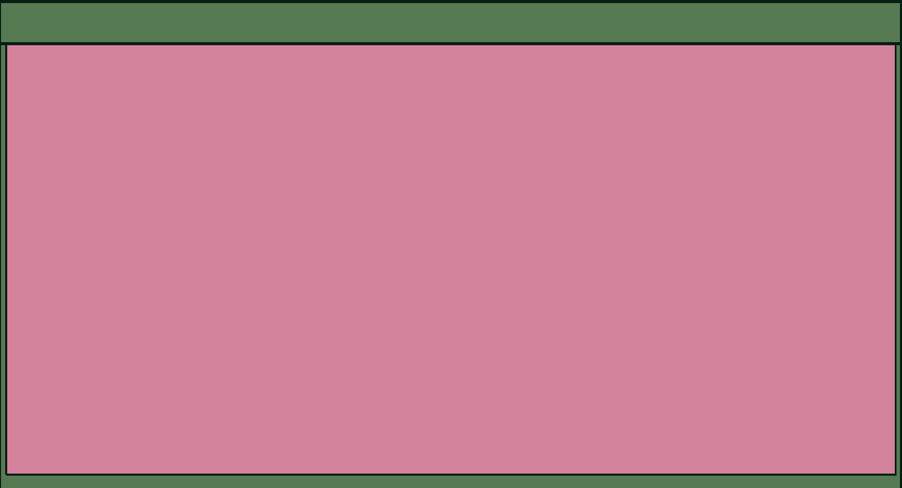

PROJECTS

I used LibreSprite to create a cat animation for the dark mode and light mode toggle on my portfolio website.

I used HTML and CSS to design this login form. It was my first time creating a project using CSS, which helped me learn the basics of styling and designing web pages.

I used HTML, CSS, and JavaScript to create this music player. Currently, it can play one song, with buttons to play, pause, skip forward, and go back to the previous part of the song.